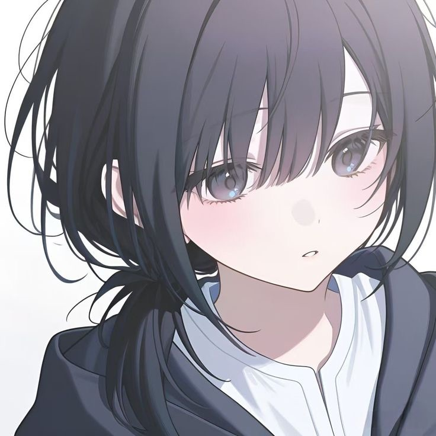

iris
17yo | she/her | lesbian
iris
17yo | she/her | lesbian
about me
haiii, i'm iris (antiviiris), i'm a programmer and a web developer. my favorite languages are javascript and osl ^^
in my free time i like to work on small projects and hang out with my friends, especially with my girlfriend (ily sophie <3)
i currently don't have any big projects im working on, i mostly like to support and contribute to other ppl's stuff.
updates
nothing noteworthy yet, pls come back later :>